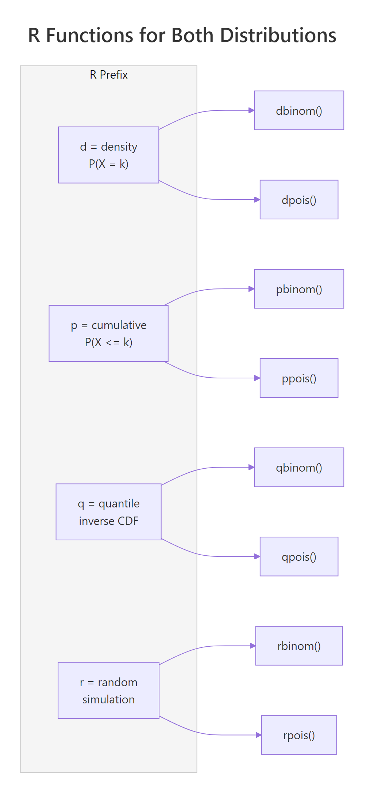
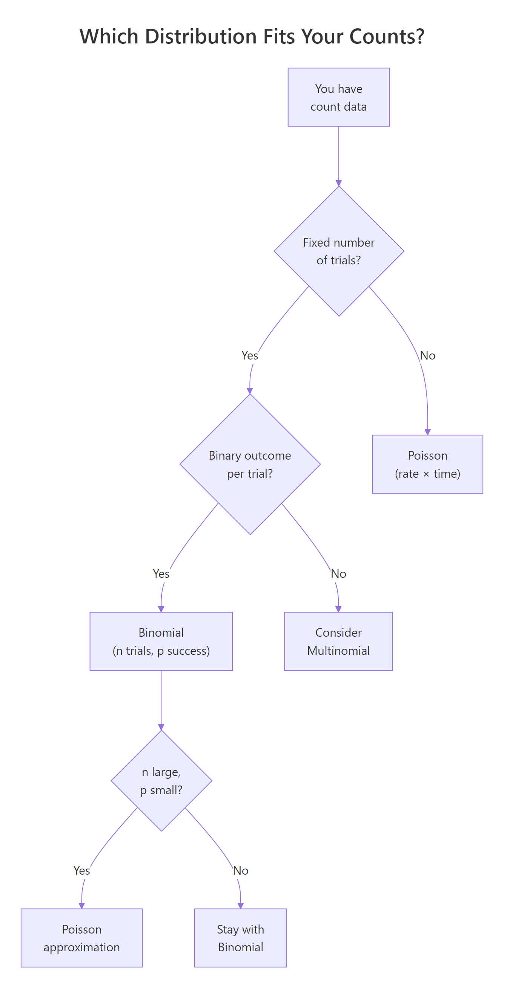
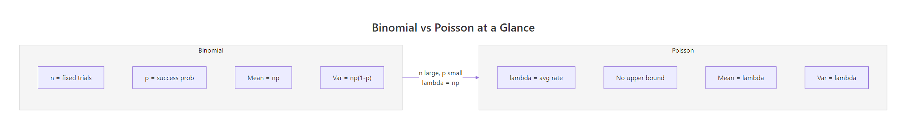

Binomial vs Poisson in R: Understand When Each Distribution Fits Your Counts
The binomial distribution counts successes in a fixed number of trials (like heads in 20 coin flips), while the Poisson distribution counts events in a fixed interval of time or space (like calls to a help desk per hour). This tutorial shows you how each distribution works in R, when to use which, and the mathematical bridge that connects them.
What does the binomial distribution model?
Imagine you flip a coin 10 times and count the heads. You know the number of trials (10), and each flip has two outcomes, heads or tails. That setup is the binomial distribution in a nutshell. Let's see it in action with R's dbinom() function.
The most likely outcome is 5 heads (probability 24.6%), and the distribution is perfectly symmetric because p = 0.5. Notice how outcomes far from 5, like 0 or 10 heads, are extremely unlikely (about 0.1% each).
The binomial distribution requires four conditions: a fixed number of trials (n), exactly two outcomes per trial (success/failure), a constant probability of success (p) across trials, and independence between trials. Whenever all four hold, you're in binomial territory.
Now let's answer a cumulative question: what's the probability of getting 3 or fewer heads?
There's about a 17.2% chance of getting 3 or fewer heads in 10 fair flips. The pbinom() function sums the individual probabilities from dbinom(0) through dbinom(3) for you.
Try it: A new drug cures 70% of patients. If 15 patients take it, what's the probability that exactly 12 are cured? Use dbinom().
Click to reveal solution
Explanation: dbinom(12, 15, 0.70) computes the exact probability of 12 successes in 15 independent trials, each with a 70% success rate.
What does the Poisson distribution model?
The binomial needs a fixed trial count. But what if there's no natural upper limit? A help desk might receive 0 calls in an hour, or 3, or 12, there's no fixed number of "trials." That's where the Poisson distribution steps in. It models the count of events in a fixed interval when those events occur independently at a constant average rate.
Let's model a help desk that averages 5 calls per hour.
The distribution peaks near lambda = 5 and has a slight right skew, there's always a small probability of getting a much higher count. Unlike the binomial, there's no ceiling on k (though probabilities shrink rapidly).
What's the chance the desk gets swamped with more than 2 calls in an hour? We can use the cumulative function ppois().
There's an 87.5% chance of getting more than 2 calls per hour when the average rate is 5. The complement trick, 1 - ppois(k, lambda), is the standard way to compute upper-tail probabilities.
Try it: A website averages 8 server errors per day. What's the probability of exactly 3 errors today? Use dpois().
Click to reveal solution
Explanation: With an average of 8 errors/day, getting only 3 is quite unlikely (about 2.9%), because 3 is far below the mean of 8.
How do the R functions map between binomial and Poisson?
R uses a consistent naming convention for all probability distributions. Every distribution gets four functions with the same prefix pattern: d for density (probability at a point), p for cumulative probability, q for quantile (inverse CDF), and r for random number generation. The suffix tells you the distribution, binom for binomial, pois for Poisson.
Let's see all eight functions side by side.
The pattern is identical: d computes exact probabilities, p accumulates, q inverts the CDF, and r simulates. Once you learn this for one distribution, you know it for all of them, dnorm, pnorm, qnorm, rnorm work the same way for the normal distribution.

Figure 1: R's d/p/q/r prefix system maps identically across binomial and Poisson functions.
Try it: Use qbinom() and qpois() to find the 90th percentile for Binomial(n=50, p=0.3) and Poisson(lambda=15). How close are they?
Click to reveal solution
Explanation: Both are close (19 vs 20), which makes sense because Binomial(50, 0.3) has mean = 15, the same as our Poisson. But they're not identical because n=50 isn't large enough for the Poisson approximation to be perfect.
When does Poisson approximate the binomial?
Here's where the two distributions connect mathematically. When you have a large number of trials (n) but each trial has a small probability of success (p), the Binomial(n, p) distribution converges to Poisson(lambda = np). This is the Poisson limit theorem, and it's one of the most elegant results in probability.
The binomial PMF is:
$$P(X = k) = \binom{n}{k} p^k (1-p)^{n-k}$$
The Poisson PMF is:
$$P(X = k) = \frac{\lambda^k e^{-\lambda}}{k!}$$
Where:
- $n$ = number of trials, $p$ = probability of success per trial
- $\lambda$ = np = expected number of events
- $\binom{n}{k}$ = "n choose k" = the number of ways to pick k successes from n trials
- $e$ = Euler's number (approximately 2.718)
If you're not interested in the math, skip to the code below, it demonstrates the convergence visually.
As n grows and p shrinks while keeping lambda = np fixed, the binomial terms converge to the Poisson formula. The rule of thumb: n >= 100 and np <= 10 makes the approximation very accurate.
Let's verify this in R.
The probabilities match to three or four decimal places. The maximum difference across all k values is just 0.0012, for practical purposes, they're interchangeable.
Now let's see this convergence visually. As n increases (with lambda fixed at 3), the binomial PMF gets closer and closer to the Poisson PMF.
At n=20, you can see gaps between the blue (binomial) and coral (Poisson) bars. By n=100, they're very close. At n=1000, the bars are virtually identical. This is the Poisson limit theorem in action.
Try it: For n=500 and p=0.004 (lambda=2), compare dbinom() and dpois() for k=0 through 5. At which k is the difference largest?
Click to reveal solution
Explanation: The largest difference is at k=3 (about 0.0016), but all differences are tiny. With n=500 and p=0.004, the Poisson approximation is excellent.
How do you simulate from each distribution?
Formulas give you theoretical probabilities. Simulation gives you data you can touch. R's rbinom() and rpois() let you generate thousands of random draws in a single line, which is invaluable for Monte Carlo estimation, checking your formulas, and power analysis.
Let's simulate 10,000 draws from a binomial and verify that the sample statistics match the theory.
The sample mean (6.01) is nearly identical to the theoretical mean (6.0), and the sample variance (4.19) matches np(1-p) = 4.2 almost exactly. With 10,000 draws, simulation estimates are very precise.
Now the same for Poisson.
Both mean and variance converge to lambda = 6, confirming the Poisson's defining property: mean equals variance. This is a practical way to check your distributional assumptions, simulate, compute, compare.
Try it: Simulate 5,000 Poisson(lambda=10) values. What fraction exceed 15? Compare your answer to the theoretical 1 - ppois(15, 10).
Click to reveal solution
Explanation: The simulated fraction (0.0486) matches the theoretical probability (0.0487) closely. The trick is mean(ex_sim > 15), which computes the fraction of TRUE values in the logical vector.
How do you choose between binomial and Poisson for real data?
You've learned both distributions. Now the practical question: when you have real count data sitting in front of you, which distribution should you reach for? Here's a simple decision checklist.
Ask yourself these questions in order:
- Is there a fixed number of trials (n)? → If no, consider Poisson.
- Is each trial binary (success/failure)? → If no, consider Multinomial or other models.
- Is n known and moderate (say, under 100)? → Binomial.
- Is n very large and p very small? → Poisson approximation works.
- Are events occurring in continuous time or space with no natural upper bound? → Poisson.

Figure 2: Decision flowchart for choosing between binomial and Poisson distributions.
The mean-variance relationship is your strongest diagnostic tool. Let's apply it to real data.
The variance-to-mean ratio is 0.65, well below 1.0. This suggests the data has less spread than a Poisson model would predict, pointing toward a binomial model, perhaps each day has a fixed pool of potential complainants with some probability of complaining.
Try it: Given weekly accident counts at an intersection, c(4, 6, 5, 3, 7, 5, 4, 6, 5, 8, 4, 3), compute the mean, variance, and their ratio. Which distribution fits better?
Click to reveal solution
Explanation: The ratio is 0.44, meaning variance is less than half the mean. This points toward a binomial model rather than Poisson. Perhaps there's a fixed number of vehicles passing through each week, and each has a small probability of an accident.
Practice Exercises
Exercise 1: Quality control comparison
A factory produces 500 items per batch, with a defect rate of 0.8%. Model the number of defective items using both Binomial(500, 0.008) and Poisson(lambda=4). Compare P(X >= 5) from each model. Then plot both PMFs for k=0 to 12 on the same chart.
Click to reveal solution
Explanation: With n=500 and p=0.008, the Poisson approximation (lambda = 500 * 0.008 = 4) is excellent. Both give P(X >= 5) = 0.3712, and the PMF bars overlap almost perfectly.
Exercise 2: Hospital simulation
An emergency room receives an average of 4.2 patients per hour (Poisson). Simulate 1,000 one-hour windows with rpois(). Find what fraction of hours have zero patients, and compare to the theoretical dpois(0, 4.2). Then, for each hour's patients, simulate whether each patient is admitted (30% chance) using rbinom(). Report the average admissions per hour and the maximum admissions seen.
Click to reveal solution
Explanation: The Poisson models arrivals (no fixed upper bound), while the binomial models admissions per hour (fixed n = arrivals that hour, binary outcome = admitted or not). This two-stage approach is common in real-world modelling.
Exercise 3: Convergence experiment
Write a function that takes n and p, computes the maximum absolute difference between Binomial(n, p) and Poisson(lambda = np) PMFs for k = 0 to 20. Test it with n = 10, 50, 100, 500, and 1000 (using p = 5/n each time, so lambda = 5 is constant). Plot the maximum difference against n.
Click to reveal solution
Explanation: The maximum difference shrinks roughly as 1/n. At n=10 it's about 0.032 (noticeable), but by n=1000 it's just 0.0004 (negligible). This quantifies how quickly the Poisson approximation improves.
Putting It All Together
Let's combine everything in a realistic scenario. A call center receives an average of 3 calls per minute (Poisson). Each call has an 85% chance of being resolved on first contact (binomial). We'll simulate 1,000 minutes of operations.
This two-stage simulation shows how Poisson and binomial work together naturally. The Poisson models the random arrival process (no fixed upper bound on calls per minute), while the binomial models the resolution of each batch (fixed n = calls received, binary outcome = resolved or not). About 43.5% of active minutes see all calls resolved on first contact, and only 12 out of 1,000 minutes had 3 or more unresolved calls.
Summary
Here's a side-by-side comparison of the two distributions:
| Property | Binomial | Poisson |
|---|---|---|
| Models | Successes in fixed n trials | Events in fixed time/space |
| Parameters | n (trials), p (success prob) | lambda (average rate) |
| Support | 0, 1, 2, ..., n | 0, 1, 2, 3, ... (no upper bound) |
| Mean | np | lambda |
| Variance | np(1-p) | lambda |
| Var vs Mean | Variance < Mean (always) | Variance = Mean |
| R density | dbinom(k, size, prob) | dpois(k, lambda) |
| R cumulative | pbinom(k, size, prob) | ppois(k, lambda) |
| R quantile | qbinom(p, size, prob) | qpois(p, lambda) |
| R random | rbinom(n, size, prob) | rpois(n, lambda) |
| Use when | Fixed trials, binary, known n | Events in time/space, no cap |
| Example | 20 coin flips, defect counts | Calls/hour, typos/page |
Key takeaways:
- Use binomial when you have a fixed number of independent binary trials with constant success probability.
- Use Poisson when you're counting events in continuous time or space with no natural upper bound.
- The Poisson approximates the binomial when n is large (>=100) and p is small (np <= 10).
- Check the variance-to-mean ratio of your data: < 1 suggests binomial, ≈ 1 suggests Poisson, >> 1 suggests negative binomial.
- R's d/p/q/r prefix system works identically across all distributions, learn it once, use it everywhere.

Figure 3: Side-by-side comparison of binomial and Poisson parameters, with the Poisson limit bridge.
References
- R Core Team, The Binomial Distribution. R Documentation. Link
- R Core Team, The Poisson Distribution. R Documentation. Link
- Hogg, R.V., McKean, J.W., Craig, A.T., Introduction to Mathematical Statistics, 8th Edition. Pearson (2019). Chapters 3-4.
- Casella, G., Berger, R.L., Statistical Inference, 2nd Edition. Cengage (2002). Section 3.2-3.3.
- NIST/SEMATECH, Binomial Distribution. Engineering Statistics Handbook. Link
- NIST/SEMATECH, Poisson Distribution. Engineering Statistics Handbook. Link
- Emory University Math Center, The Connection Between the Poisson and Binomial Distributions. Link
- Wickham, H., Grolemund, G., R for Data Science, 2nd Edition. O'Reilly (2023). Link
Continue Learning
- Random Variables in R, understand PMF, PDF, and CDF before diving into specific distributions like binomial and Poisson.
- Conditional Probability in R, the foundation for understanding trial-based probability and independence assumptions.
- Probability Axioms in R, prove the rules of probability that underlie both distributions using Monte Carlo simulation.
Further Reading
- Fitting Distributions to Data in R: fitdistrplus Step-by-Step Tutorial
- The Exponential Distribution in R: Memoryless Property & Survival Link
- Geometric & Negative Binomial Distributions in R: Waiting Time Models
- Zero-Inflated Distributions in R: Handle Excess Zeros in Count Data
- Hypergeometric Distribution in R: dhyper, phyper Examples + Calculator
- Binomial Distribution Exercises in R: 10 Practice Problems Solved
- Poisson Distribution Exercises in R: 10 Problems with Solutions